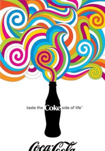
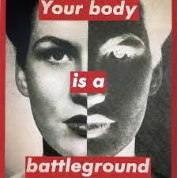
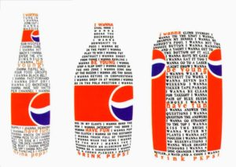

En el campo del diseño gráfico, existe una creciente demanda de profesionales capaces de combinar habilidades de diseño visual con conocimientos en diseño web. Ser un diseñador Full Stack implica tener conocimientos tanto en diseño gráfico como en diseño web, lo que abre nuevas oportunidades laborales y permite abordar proyectos más amplios. En esta investigación, exploraremos las áreas de conocimiento que un diseñador gráfico debe adquirir para convertirse en un diseñador web competente y versátil.
Algunos de los conocimientos necesarios para que un diseñador crezca como Full Stack (Diseñador Web) son los siguientes:
- Diseño visual y creatividad
- Herramientas de diseño web, como Adobe Photoshop, Illustrator, XD, Sketch, Figma, etc.
- Fundamentos de HTML y CSS
- Diseño responsive
- Experiencia del usuario (UX)
- Diseño de interacción
- Diseño basado en datos y análisis web
- Conocimientos básicos de programación, especialmente JavaScript
- Gestión de proyectos y colaboración en equipo
Diseño visual y creatividad
El diseño visual es una habilidad fundamental para un diseñador web. Implica la capacidad de crear diseños atractivos, armoniosos y efectivos visualmente. Un diseñador debe tener un buen ojo para el color, la tipografía, la composición y la estética en general.
Además, la creatividad es esencial para generar ideas innovadoras y soluciones únicas en el diseño. Un diseñador debe tener la capacidad de pensar de manera original y fuera de lo convencional para crear diseños impactantes y memorables.
- Conocimiento profundo de los principios del diseño, como el equilibrio, la proporción, la jerarquía y el contraste.
- Capacidad para utilizar herramientas de diseño gráfico y manipulación de imágenes.
- Habilidades de ilustración y dibujo.
Herramientas de diseño web
Las herramientas de diseño web son fundamentales para un diseñador Full Stack. Estas herramientas permiten crear diseños, prototipos y maquetas de sitios web y aplicaciones. Algunas de las herramientas comunes utilizadas por los diseñadores web incluyen Adobe Photoshop, Illustrator, XD, Sketch y Figma.
Un diseñador web debe ser competente en el uso de estas herramientas y conocer sus capacidades y funcionalidades para crear diseños efectivos y visualmente atractivos.
| Herramienta | Descripción | Requisitos de PC | Otras Características |
|---|---|---|---|
| Adobe Photoshop | Herramienta de edición y manipulación de imágenes. |
- Sistema operativo: Windows 10 o macOS - Procesador: Intel Core i5 o superior - Memoria RAM: 8 GB o superior - Espacio en disco: 4 GB de espacio disponible |
|
| Adobe Illustrator | Herramienta de diseño vectorial. |
- Sistema operativo: Windows 10 o macOS - Procesador: Intel Core i5 o superior - Memoria RAM: 8 GB o superior - Espacio en disco: 2 GB de espacio disponible |
|
| Adobe XD | Herramienta de diseño y prototipado de experiencias. |
- Sistema operativo: Windows 10 o macOS - Procesador: Intel Core i5 o superior - Memoria RAM: 4 GB o superior - Espacio en disco: 2 GB de espacio disponible |
|
| Sketch | Herramienta de diseño para macOS. |
- Sistema operativo: macOS - Procesador: Intel Core i5 o superior - Memoria RAM: 8 GB o superior - Espacio en disco: 500 MB de espacio disponible |
|
| Figma | Herramienta de diseño y colaboración en la nube. |
- Navegador web compatible (Chrome, Firefox, Safari, etc.) - Conexión a Internet |
Fundamentos de HTML y CSS
HTML (HyperText Markup Language) y CSS (Cascading Style Sheets) son los lenguajes fundamentales para la construcción y el diseño de sitios web. Un diseñador web debe tener un buen conocimiento de estos lenguajes para crear estructuras y estilos en sus diseños.
HTML se utiliza para definir la estructura y los elementos de una página web, mientras que CSS se utiliza para establecer el aspecto visual y el diseño de esos elementos.
- Conocimiento de las etiquetas y elementos básicos de HTML, como encabezados, párrafos, listas, enlaces e imágenes.
- Comprensión de las propiedades y selectores de CSS para aplicar estilos a los elementos HTML.
- Capacidad para crear diseños flexibles y responsivos utilizando CSS Grid y Flexbox.
Diseño responsive
El diseño responsive se refiere a la capacidad de un sitio web para adaptarse y verse correctamente en diferentes dispositivos y tamaños de pantalla, como computadoras de escritorio, tabletas y teléfonos móviles. Es necesario comprender los principios y técnicas del diseño responsive para crear diseños que proporcionen una experiencia óptima al usuario en cualquier dispositivo.
Algunos aspectos importantes del diseño responsive incluyen el uso de unidades de medida relativas, como porcentajes o "em", en lugar de medidas absolutas, y la aplicación de estilos específicos mediante el uso de media queries para adaptar la apariencia del sitio en función de las características del dispositivo.
Experiencia del usuario (UX)
- La experiencia del usuario (UX) se refiere a cómo se siente y percibe una persona al interactuar con un sitio web o una aplicación. Como diseñador web, es importante comprender los principios de la UX y cómo crear interfaces que sean intuitivas, eficientes y satisfactorias para los usuarios.
- Para lograr una buena experiencia del usuario, es necesario realizar técnicas de investigación de usuarios, como entrevistas o pruebas de usabilidad, con el fin de comprender las necesidades y expectativas de los usuarios.
- Además, se debe tener en cuenta la arquitectura de la información y la navegación del sitio web para facilitar el acceso a la información de manera clara y organizada.
- Otro aspecto importante es el diseño de flujos de interacción y la creación de prototipos interactivos para validar y mejorar la usabilidad del sitio.
Diseño de interacción
El diseño de interacción se centra en cómo los usuarios interactúan con un sitio web o una aplicación. Como diseñador web, debes considerar cómo los usuarios navegan, realizan acciones y completan tareas en la interfaz.
Para crear una buena experiencia de interacción, es importante utilizar principios de diseño como retroalimentación visual, respuesta rápida a las acciones del usuario y mapeo claro de las acciones y resultados. Además, se pueden agregar microinteracciones y animaciones sutiles para mejorar la experiencia del usuario y hacerla más atractiva y agradable.
Diseño basado en datos y análisis web
- El diseño basado en datos implica utilizar información y análisis para tomar decisiones fundamentadas en el diseño de un sitio web. Como diseñador web, debes ser capaz de utilizar herramientas de análisis web, como Google Analytics, para recopilar datos sobre el comportamiento de los usuarios y el rendimiento del sitio.
- Estos datos pueden ayudarte a comprender cómo interactúan los usuarios con el sitio, identificar áreas de mejora y realizar pruebas y experimentos para optimizar la experiencia del usuario y los resultados del negocio.
- Además, es importante tener en cuenta los conceptos de SEO (Search Engine Optimization) para asegurarse de que el sitio web sea visible y tenga un buen posicionamiento en los motores de búsqueda.
Conocimientos básicos de programación, especialmente JavaScript
Los conocimientos básicos de programación son útiles para un diseñador web, especialmente en el lenguaje de programación JavaScript. Comprender los fundamentos de la programación, como variables, estructuras de control y funciones, te permitirá agregar interactividad y dinamismo a un sitio web.
Además de los conceptos básicos de programación, es beneficioso estar familiarizado con bibliotecas y frameworks de JavaScript, como jQuery o React, que pueden facilitar el desarrollo de funcionalidades más avanzadas. Aunque no es necesario convertirse en un desarrollador completo, tener habilidades en JavaScript amplía las posibilidades y te permite crear experiencias más sofisticadas y personalizadas para los usuarios.
Gestión de proyectos y colaboración en equipo
La gestión de proyectos y la colaboración en equipo son habilidades importantes para un diseñador web. Trabajar en proyectos web generalmente implica colaborar con otros profesionales, como desarrolladores, especialistas en marketing y clientes, para lograr los objetivos del proyecto de manera efectiva.
Como diseñador web, es necesario tener conocimiento de metodologías de gestión de proyectos, como Agile o Scrum, que ayuden a organizar el trabajo y establecer plazos y entregables claros. Además, la capacidad de comunicarse y colaborar efectivamente con los miembros del equipo es fundamental para lograr resultados exitosos.
Diseñadores Gráficos Exitosos en la Web
| Nombre | País | Información | Red Social | Representacion |
|---|---|---|---|---|
| Milton Glaser | Estados Unidos (1929 – 2020) | Maestro de maestros. Su obra es mundialmente conocida. Su logotipo para la ciudad de New York, que realizó de forma gratuita, se ha convertido en un icono cultural. También han pasado a la historia sus diseños editoriales, como sus numerosos trabajos para la revista New York. Diseñó carteles memorables, como su famoso cartel de Bob Dylan o el cartel de la última temporada de Mad Men. Su talento como ilustrador es omnipresente en su obra. Líneas simples, colores planos y trazos sencillos caracterizan su estilo. |

|
 |
| Barbara Kruger | Estados Unidos (1945 – ) | Gran parte de su trabajo se basa en la combinación de fotografías en blanco y negro con una caja de texto con un mensaje reivindicativo y provocador. Negro, blanco y rojo son colores omnipresentes en su obra. Sus diseños están llenos de influencias del constructivismo, la poesía y el arte conceptual. Muchos de sus mensajes plantean una crítica al capitalismo y al patriarcado. Para ello recurre en numerosas ocasiones a imágenes extraídas de anuncios publicitarios y a frases que parecen slogans. Las letras blancas sobre rojo con la tipografía “Futura Bold Oblique” ya forman parte de la historia del diseño gráfico como señas de identidad de Barbara Kruger. |
|
 |
| David Carson | Estados Unidos (1955 – ) | Se le conoce como el padre del diseño grunge. Su estilo está llena de patrones y texturas construidas con tipografías, colores y fotografías, creando collages muy llamativos. Comparte su pasión por el diseño con su amor por el surf. Su estilo es a veces irreverente y transgresor, incluso a veces ha sido criticado por la ilegibilidad de algunos de sus diseños. También trabajó creando anuncios de TV para marcas como Budweiser, Xerox o Pepsi. |
|
 |
Conclusión
En conclusión, para ser un diseñador web competente y versátil, un diseñador gráfico debe adquirir una serie de conocimientos y habilidades adicionales. El diseño visual y la creatividad son fundamentales para crear diseños atractivos y memorables. El dominio de herramientas de diseño web como Adobe Photoshop, Illustrator, XD, Sketch y Figma es esencial para crear diseños efectivos y visualmente atractivos. Los fundamentos de HTML y CSS son necesarios para construir y diseñar sitios web, mientras que el diseño responsive garantiza que los sitios se vean bien en diferentes dispositivos y tamaños de pantalla.
La experiencia del usuario (UX) y el diseño de interacción son aspectos importantes para crear interfaces intuitivas y satisfactorias. El diseño basado en datos y el análisis web permiten tomar decisiones fundamentadas en el diseño y optimizar la experiencia del usuario y los resultados del negocio. Conocimientos básicos de programación, especialmente en JavaScript, permiten agregar interactividad y dinamismo a los sitios web. Por último, la gestión de proyectos y la colaboración en equipo son habilidades necesarias para trabajar en proyectos web de manera efectiva.
En resumen, ser un diseñador web Full Stack requiere una combinación de habilidades en diseño gráfico, diseño web, programación y gestión de proyectos. Al adquirir estos conocimientos y habilidades, un diseñador gráfico puede ampliar sus oportunidades laborales y abordar proyectos más amplios y desafiantes en el campo del diseño web.